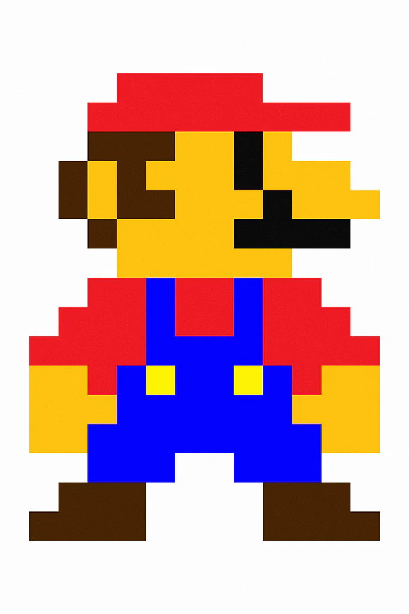
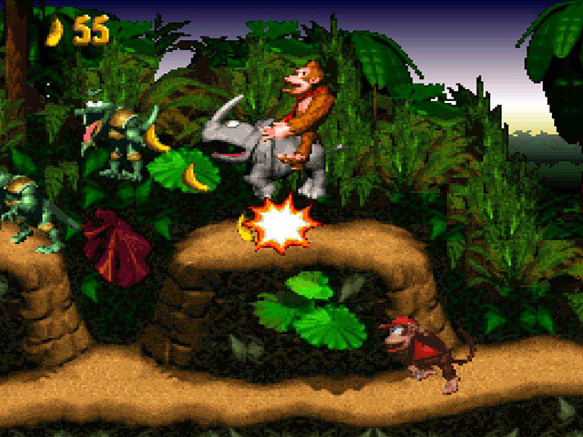
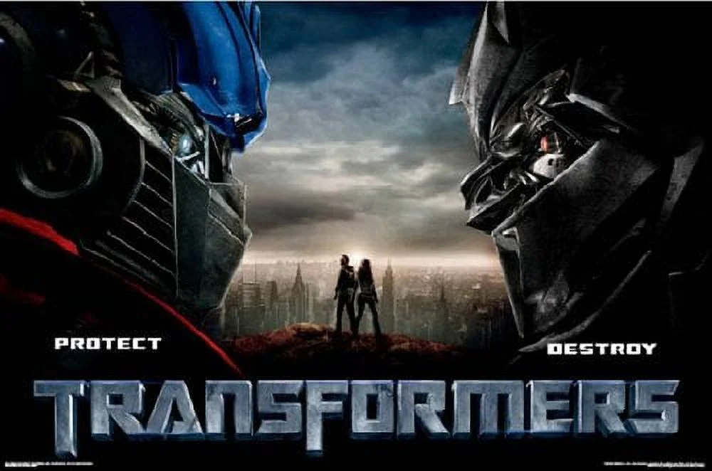

welcome my site!
here are things that i like:
games
mario
Mario is a fun and colorful video game where you play as a character named Mario, a friendly plumber who goes on adventures to save a princess and defeat bad guys. In the game, you run, jump, and explore different levels filled with blocks, coins, and enemies like Goombas and Koopas. You can collect power-ups like mushrooms to grow bigger, fire flowers to shoot fireballs, and stars to become invincible for a short time. The main goal is to reach the end of each level, avoid dangers, and rescue Princess Peach from the evil villain Bowser. The game is fun for all ages and has bright graphics, catchy music, and creative worlds like forests, castles, and underwater levels. There are many Mario games, but they all focus on action, adventure, and having a good time.
donkey kong
Donkey Kong is a classic arcade video game where you play as a character named Jumpman (who later became known as Mario). The goal of the game is to save a girl named Pauline who has been captured by a giant ape called Donkey Kong. In the game, Donkey Kong throws barrels and other obstacles from the top of a construction site. You must climb ladders, jump over barrels, and avoid dangers to reach the top and rescue Pauline. The game gets harder with each level, making it fun and challenging. Donkey Kong was one of the first big video games and helped make Nintendo famous. It’s known for its simple gameplay, catchy music, and being the first game to feature Mario.
mortal kombat
Mortal Kombat is a famous fighting video game series where powerful characters from different worlds battle each other in one-on-one matches. Each fighter has unique moves, weapons, and special abilities. The game is known for its intense action, dramatic visuals, and its signature finishing move called a "Fatality", where the winner performs an over-the-top move to defeat their opponent in a brutal way. Mortal Kombat has a dark, fantasy-style story involving realms, warriors, and a tournament that decides the fate of the world. Over time, it has become one of the most iconic and controversial games in history, known for pushing the limits of video game violence.films
avatar
Avatar is a visually stunning science fiction movie directed by James Cameron. The story takes place on a distant moon called Pandora, where humans are trying to mine a valuable mineral called unobtanium. To interact with the native people, the Na’vi, humans use genetically engineered bodies called "avatars" that look like the Na’vi but are controlled by human minds. The main character, Jake Sully, is a disabled former marine who gets a chance to control an avatar. As he explores Pandora, he learns to understand and respect the Na’vi’s way of life, their deep connection to nature, and the importance of protecting their home from destruction. Avatar is famous for its groundbreaking special effects, immersive 3D experience, and powerful message about environmentalism, respect for indigenous cultures, and the dangers of greed.
transformers
Transformers is an action-packed science fiction movie about giant alien robots that can change into vehicles, machines, and weapons. These robots come from a distant planet called Cybertron and are divided into two groups: the heroic Autobots, led by Optimus Prime, and the evil Decepticons, led by Megatron. When the Transformers arrive on Earth, they continue their ancient battle, and humans get caught in the middle. A young man named Sam Witwicky becomes involved when he discovers that he holds a clue to a powerful secret the Transformers are fighting over. The movie is known for its thrilling battles, high-tech special effects, and the amazing way the robots transform. It's a mix of sci-fi, adventure, and humor, making it a popular film for fans of all ages.
